Rav Yakov Moshe Löwenstamm
1747-1815
Av Beis Din of the Ashkenazi community in Amsterdam (1793-1815).
Exploring the kvorim of the great world leading rabbis who lived and served in Amsterdam and other cities in the Netherlands throughout the centuries.
1747-1815
Av Beis Din of the Ashkenazi community in Amsterdam (1793-1815).
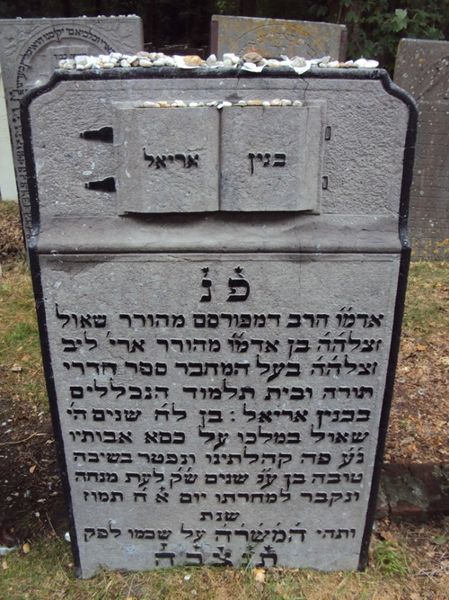
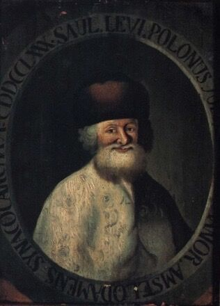
1717 – 1790
Av Beis Din of Amsterdam and author of Sefer Binyan Ariel.
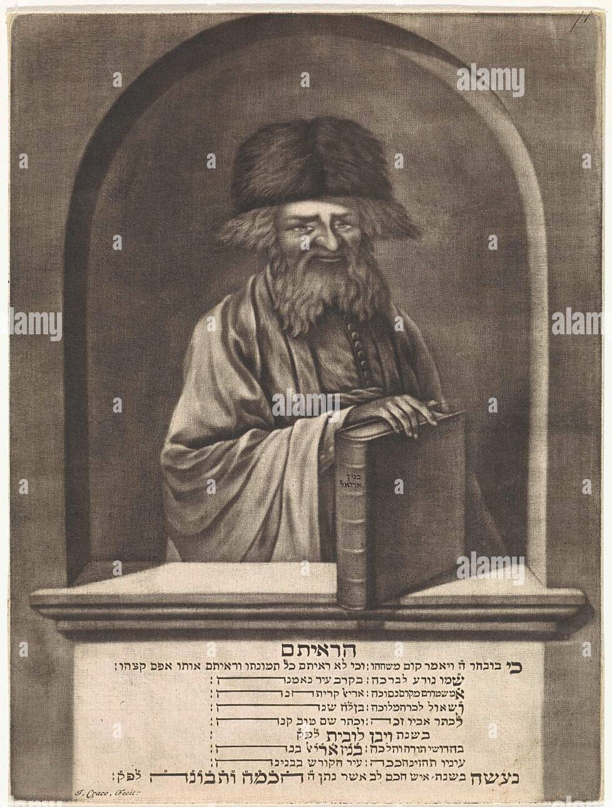
1690-1755
Av Beis Din of Amsterdam and founder of Beis Hamedrash Ets Chaim.
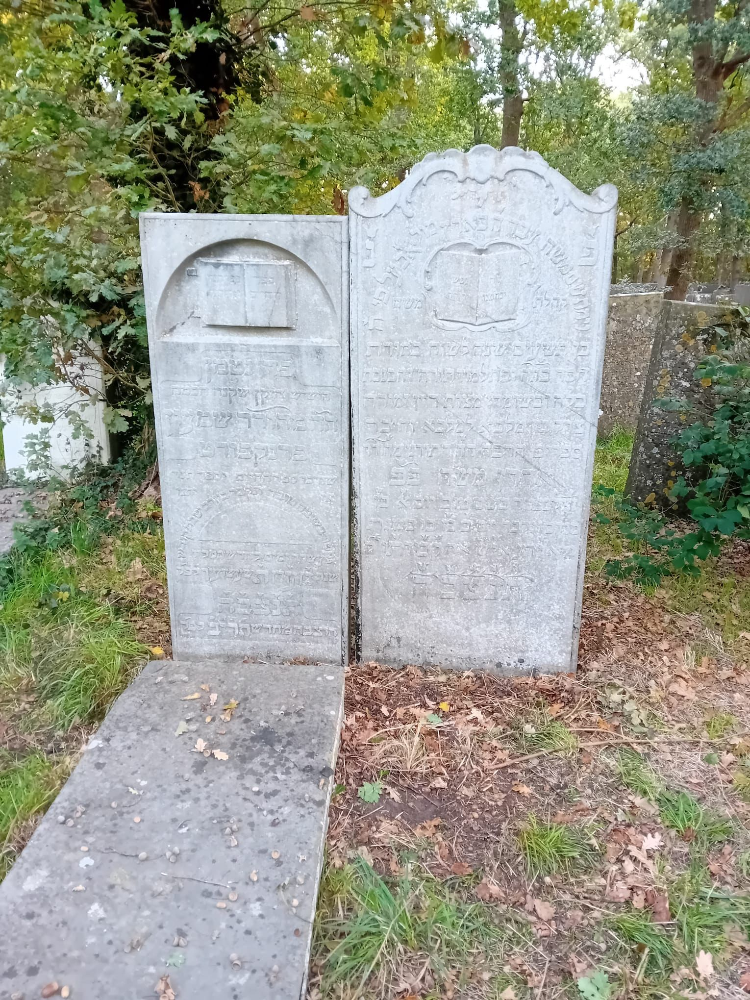
1642-1712
Author of Sefer Hachaim, a classic work on the laws of mourning.
1672-1762
Dayan of Amsterdam, printer, and commentator on the Shulchan Oruch.
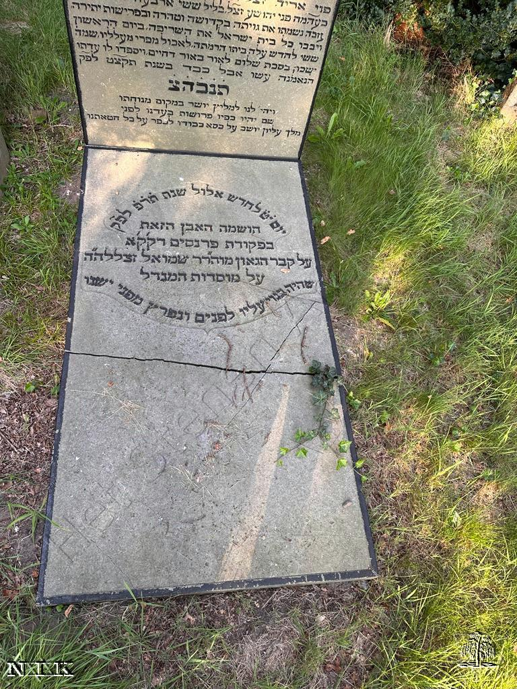
1773 - 1838
Chief Rabbi of Amsterdam who pioneered preaching in the Dutch language.

1604-1657
Founder of the first Hebrew printing press in Amsterdam and diplomat.
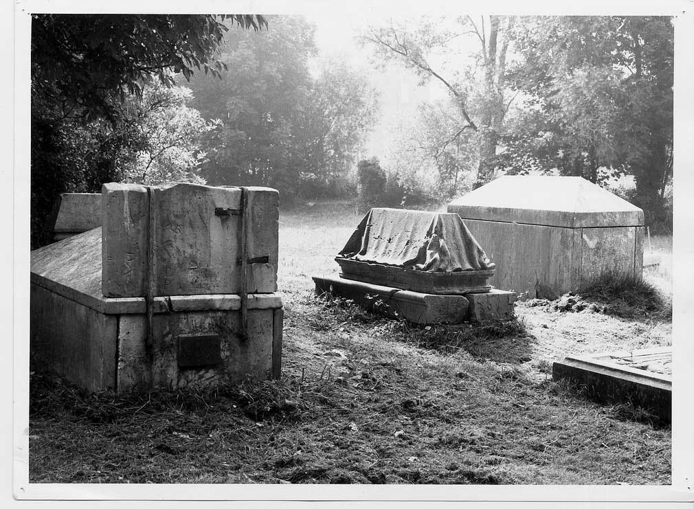
1560 - 1622
First Chacham of Neveh Shalom and master Hebrew grammarian.
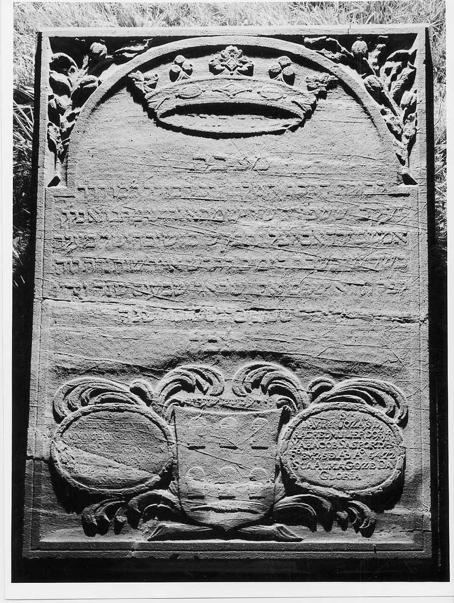

1610-1698
Chacham of Amsterdam and leading opponent of the Shabbatean movement.
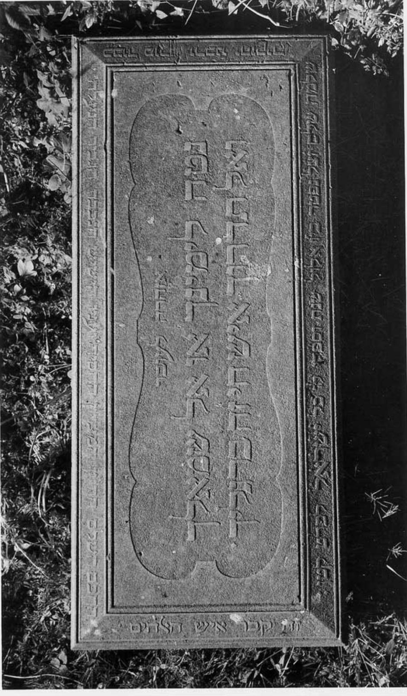
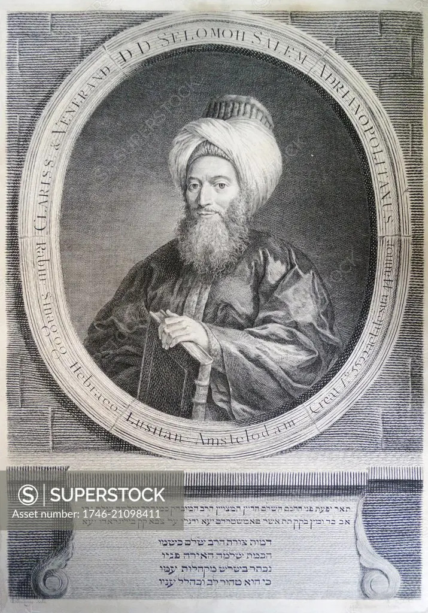
1705- 1781
Chacham of the Sephardi kehilla and author of Sefer Lev Shalem.
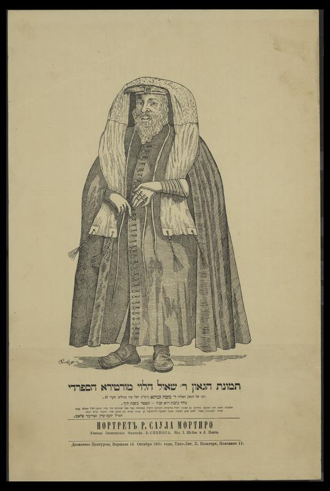
1596-1660
Av Beis Din of the Portuguese community and founder of Yeshiva Keter Torah.
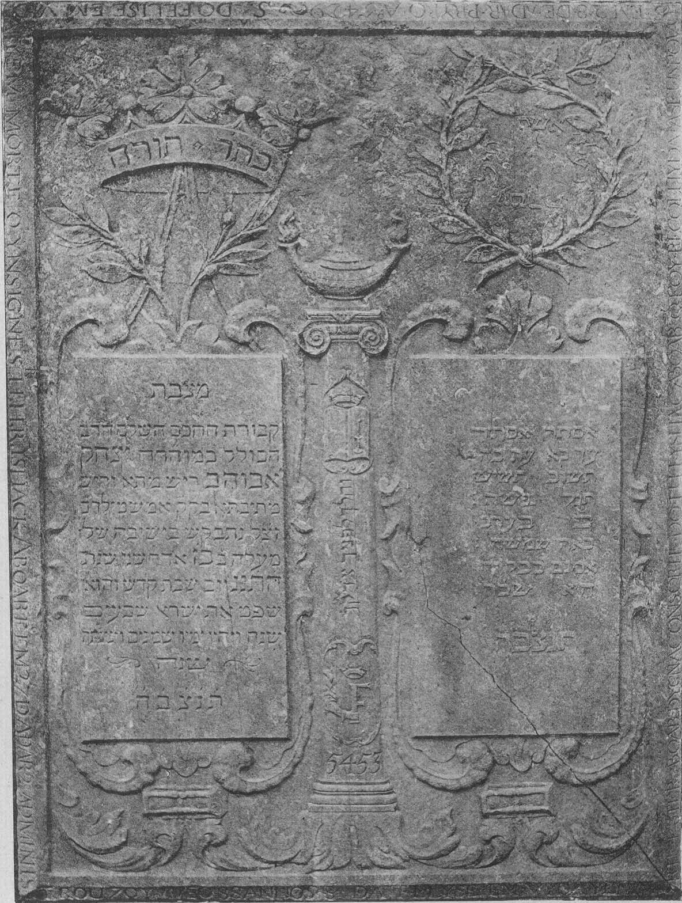
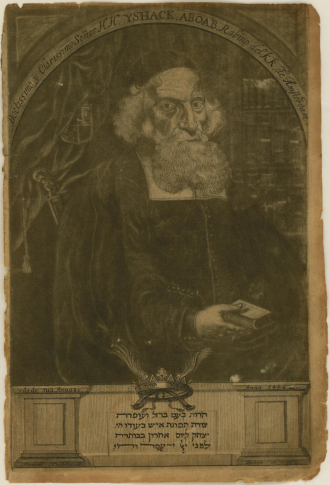
1605-1693
Chacham of Amsterdam and first rabbi in the Americas.
1826-1884
Talmudic scholar and author of Sefer Tsapachas Hashemen.
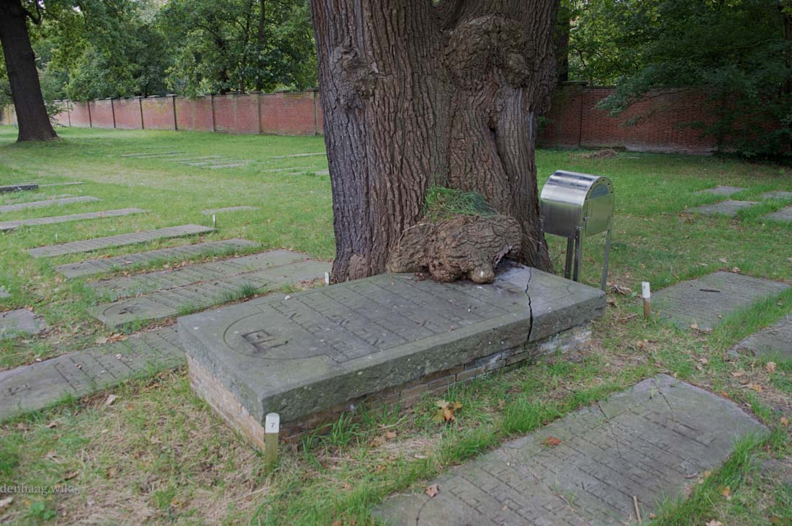
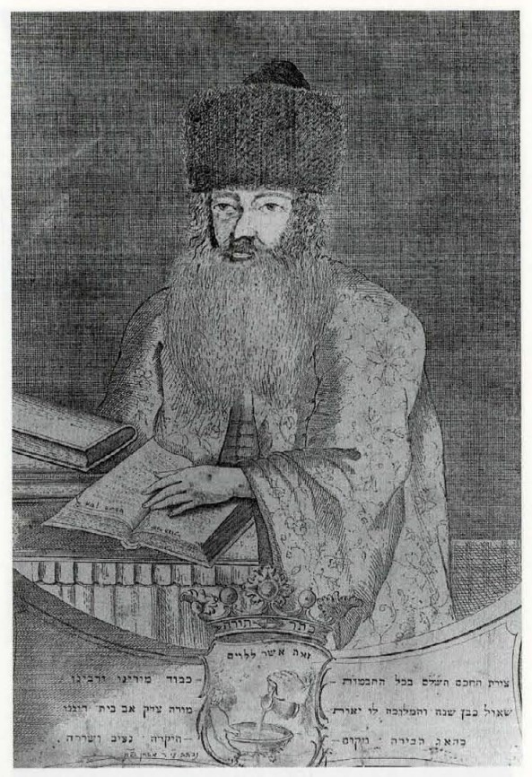
1712-1785
Chief Rabbi of the Hague and author of Sefer Binyan Shaul.

1741-1809
Chief Rabbi of Rotterdam and author of the responsa Sefer Pne Arye.